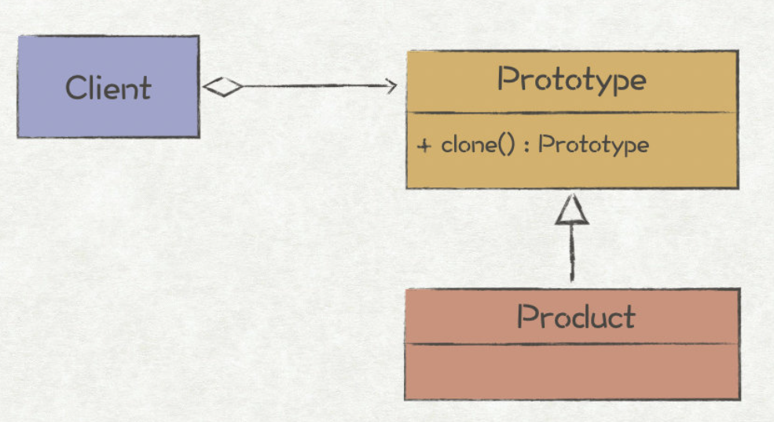

目录
Prototype-原型¶
Note
creates objects by cloning an existing object.针对创建成本比较大的对象，利用对已有对象进行复制的方式进行创建，以达到节省创建时间的目的。它的两种实现方式：深拷贝和浅拷贝

遇到的问题¶
原型模式主要解决对象复制的问题，它的核心就是 clone() 方法，返回 Prototype 对象的复制品。
这样进行对象的创建:
新创建一个相同对象的实例，
然后遍历原始对象的所有成员变量，并将成员变量值复制到新对象中。
这种方法的缺点很明显:
那就是使用者必须知道对象的实现细节，导致代码之间的耦合。
另外，对象很有可能存在除了对象本身以外不可见的变量，这种情况下该方法就行不通了。
原型模式¶
设计一个 Prototype 抽象接口:
package prototype
...
// 原型复制抽象接口
type Prototype interface {
clone() Prototype
}
type Message struct {
Header *Header
Body *Body
}
func (m *Message) clone() Prototype {
msg := *m // 这儿应该对各成员赋值吧，这样应该是浅拷贝 todo
return &msg
}
使用:
package test
...
func TestPrototype(t *testing.T) {
message := msg.Builder().
WithSrcAddr("192.168.0.1").
WithSrcPort(1234).
WithDestAddr("192.168.0.2").
WithDestPort(8080).
WithHeaderItem("contents", "application/json").
WithBodyItem("record1").
WithBodyItem("record2").
Build()
// 复制一份消息
newMessage := message.Clone().(*msg.Message)
if newMessage.Header.SrcAddr != message.Header.SrcAddr {
t.Errorf("Clone Message failed.")
}
if newMessage.Body.Items[0] != message.Body.Items[0] {
t.Errorf("Clone Message failed.")
}
}
// 运行结果
=== RUN TestPrototype
--- PASS: TestPrototype (0.00s)
PASS